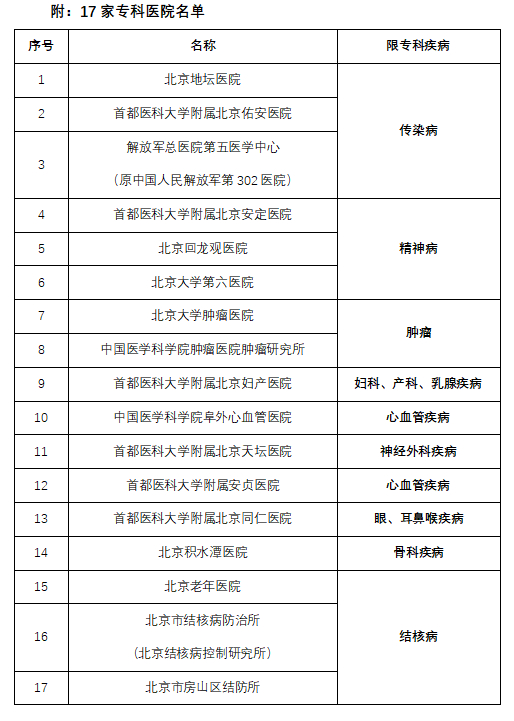
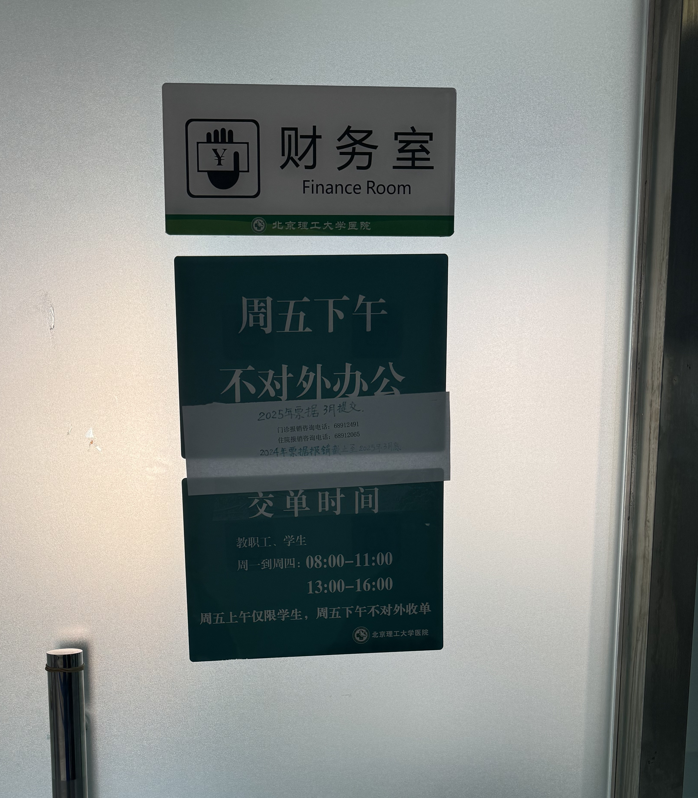
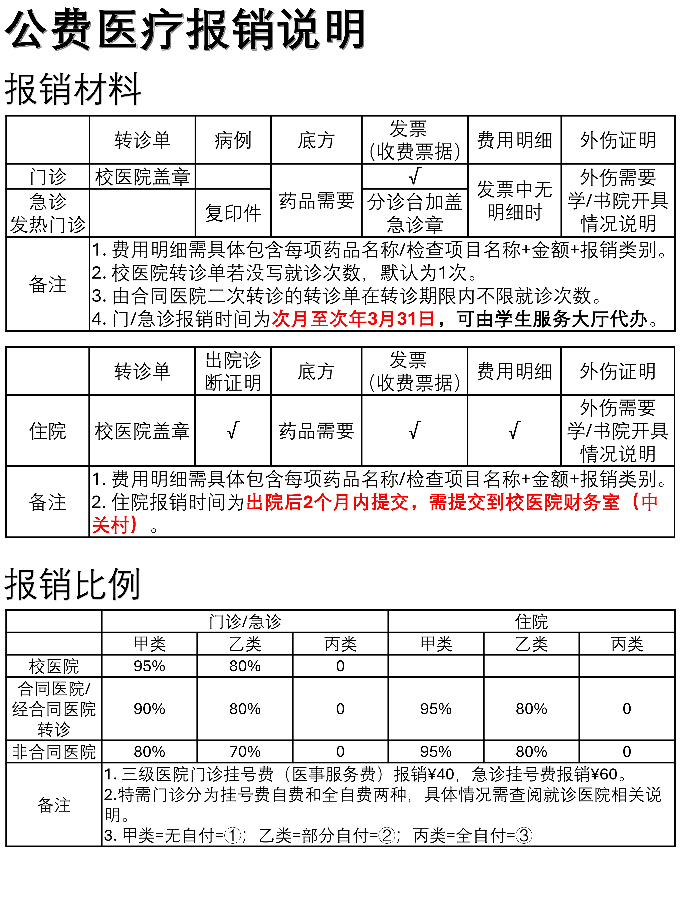
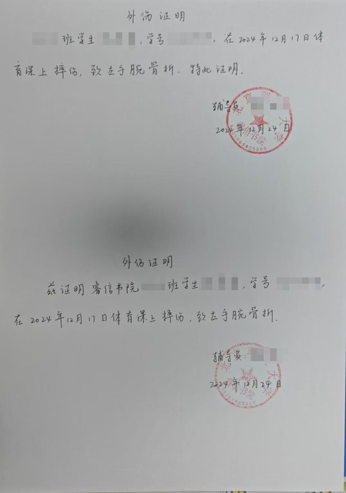

前言
本文章记录了我骨折受伤后的一系列事务处理流程，包括缓考申请、重考/重修/补考申请以及后续参与、公费医疗报销等。理论上来讲，这些流程适用于大部分与我情况类似的北理学生，但是具体的细节可能会有所不同。希望这篇文章能够帮助到有需要的人。
注意：这里的内容仅供参考，具体的事务处理流程可能因学校、地区、时间等因素而有所不同。请以学校的官方通知和规定为准。
缓考申请、重考/重修/补考的进行
详见在北理工缓考
公费医疗报销
本文部分内容借鉴自就医与医疗报销 - BIT101。
省流版：公费医疗报销重点注意事项、避坑点
简介
北京理工大学的公费医疗报销指的是在定点医院（海淀医院、良乡医院）或专科医院（如骨科对应的专科医院为积水潭医院，具体参见下面的图片）就诊之后，首先采取自费的形式向医院付费，此后携带所需材料，提交到学校指定单位，经审核后按比例进行报销，打款到学生对应的招商银行卡的过程。主要分为两类，门急诊报销和住院报销，两类报销所需要提交的材料和提交方式、时间与地点也略有不同。

上面没有提到校医院。由于我并没有去校医院看过病，所以我不知道校医院是先付费再报销的形式还是直接降低医疗费用。
据我了解到的医疗付费手段大概分为自费、公费、医保三种。自费则不必提，而医保在到目前为止的大学期间似乎并没有太多的涉及过。因此我推测北京理工大学的学生伤病的报销手段大多是通过公费医疗报销。
所需材料
事实上，按照提交材料的不同，门急诊报销还可进一步细分为门诊报销和急诊报销。
门诊报销：校医院转诊单、发票、底方（可选，如果治疗过程开药了则会产生对应的底方，没开药就不需要）。骨折等情况需要额外开具外伤证明，下同。
急诊报销：发票、病例、底方（可选）。注意急诊报销不需要校医院转诊单。
住院报销：校医院转诊单、出院诊断证明、发票、住院明细、底方（可选）。
报销流程
本流程的顺序并非我所实际经历的顺序，而是我按照依赖关系整理出来的较为合适的顺序。
开具/补开转诊单
除了急诊之外，其他情况的诊疗都需要校医院转诊单，才能进行报销。因此，在条件允许的情况下，建议诊疗之前先前往校医院开具转诊单，例如针对骨折来说，在后续的每一次复查之前，都需要先前往校医院开具转诊单（即：若多次外出就医，每次都要开转诊单）。不过出于条件限制或者怕多次往返学校麻烦等考虑而没有在诊疗前开具转诊单的，学校也允许补开转诊单。理论上来说补开有一个期限（印象中是一个月，但不确定），但大多数医生都会在你要求补开的时候给你补开，所以不用太担心。
开具/补开转诊单，需要前往先前往校医院（自己所在校区的即可），进行挂号预约。之后面见医生时，向医生申请开具转诊单，并简单说明自身情况和个人信息。转诊单现场即可开好。
了解报销重要规定
办理报销手续有以下两种主要途径：
- 自行前往中关村校区校医院二楼财务室办理。
- 在良乡校区的学生，可以前往学生服务中心公费医疗报销窗口申请代办（通过京工飞鸿）。
请注意：代办业务目前（2025年2月）仅支持门急诊报销，住院报销只能在中关村校区校医院办理！
两种途径分别有不同的开放时间。
- 中关村校区校医院二楼财务室：周一至周五上午，上午8:00-11:00，下午13:00-16:00（不过这两个下班时间过后一点点也可能有人），周五下午不对外办公！（此时是统一处理良乡学服寄来的单子的时间，办公室内有人，但是门是锁着的）。
- 良乡校区学生服务中心公费医疗报销窗口：周一到周日的学服工作时间（具体忘了，总之晚上到晚8点）。

不同类型报销、不同时间就医的报销的不同交单时间也不同。
- 门急诊报销：目前（2025年2月）的规定：2024年的门急诊报销，最晚在2025年3月31日前交单；2025年的门急诊报销，最早在2025年3月1日交单，最晚在2026年3月31日前交单。
- 住院报销：似乎并没有明确的规定，但是之前在某些途径看到有1个月、2个月等不同说法的期限，具体考证方式请点击参见：北理工公费医疗报销中各种来源的消息该怎么辨别并做决定。
了解了以上规定之后，就可以根据自己的情况，选择合适的时间前往办理报销手续。对于中关村校区的同学来说，办理报销过程相对方便一些。但是对于涉及到住院报销的良乡校区同学来说，显然建议先进行在良乡校区学生服务中心办理门急诊报销，再到中关村校区办理住院报销，以及可能在良乡学服办不了的一些部分（会有吗）。
关于报销材料和报销比例，这里有一张图加以总结：

办理报销手续
复印件
盖章！！！！！！！！
坐校车注意事项（购票、乘车安全、推荐下车地点）
校医院财务室地点，中关村校区校医院地点
官方通知
本部分的一部分内容也可以在以下官方通知中找到。除去以下通知之外，也存在一些其他的通知，但是我认为其他通知要么就是比较老旧要么就不是一个宏观的规定性文件。
北京理工大学学生公费医疗管理实施细则
公费医疗报销须知
其他注意事项
骨折受伤需要开具书院或学院的外伤证明
如题所述，骨折受伤需要开具书院或学院的外伤证明，大体内容（可参考下面的照片）包括学生信息、受伤时间、受伤原因以及辅导员签字和盖章等。设计这一规定的原因，我猜测一方面是证明你确实受了伤，防止造假；另一方面也是由于骨折受伤的特殊性，你需要证明你自己不是因为不当原因（如打架斗殴等）而受伤的，不正当原因的受伤可能会导致你无法获得学校的支持。

这里辅导员一次给我开了两个证明，不过后续在使用这个证明的时候其实是可以复印的，所以一般一个证明就够了。
在此后的各种手续中，都会有很大概率用到这个证明。可以先找辅导员开好了，以免后续需要的时候再奔波。
北理工公费医疗报销中各种来源的消息该怎么辨别并做决定
简而言之，你最终最能相信的，应当是直接为你办理手续的工作人员的口头说明或者行为（即接受你的办理请求）。